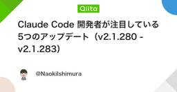

AIタグが付けられた新着記事 - Qiita
https://qiita.com/tags/ai
[PR] Qiita Conference 2026 Autumnのご紹介「Qiita Conference 2026 Autumn」とは、10月27日（火）〜29日（木）の3日間、オンラインで開催するエンジニア向けのカンファレンスです。参加費は無料で、事前申込が必要です。生成AI時代の開発・組織・ものづくりをテーマに、各分野の第一線で活躍する登壇者が日替わりで登壇します。ぜひご参加ください。Qiita Conference 2026 AutumnについてはこちらAIは、「Artificial Intelligence（人工知能）」の略で、人間のような知的な活動（学習、推論、問題解決、理解など）をコンピューターに実現させる技術や、その研究分野全体を指します。コンピューターがまるで人間のように見える振る舞い（学習や判断）を可能にするための技術です。AIの代表的な分野AIは非常に広範な概念であり、その技術は日々進化しています。機械学習（Machine Learning）データから学習し、予測や分類を行う技術ディープラーニング（Deep Learning）機械学習の一種で、多層のニューラルネットワークを用いることで、より複雑なパターンを学習できる技術自然言語処理（Natural Language Processing、NLP）人間の言葉をコンピューターが理解し、処理する技術画像認識（Image Recognition）画像内の物体や人物、パターンなどを識別する技術ロボティクス（Robotics）ロボットの設計、製造、運用に関わる技術リファレンスWikipedia: 人工知能 - Wikipedia関連タグLLM生成AIOpenAIAnthropic
フィード
950のClaudeがDNAを探索――未知の酵素系「ART」候補を発見
AIタグが付けられた新着記事 - Qiita
公開日：2026年9月26日 ｜ 一次資料確認：Anthropic公式発表・同社プレプリント案内約950のClaudeエージェントが21時間かけて巨大なDNAデータベースを探索し、未知の酵素系候補を見つけた――。Anthropicは2026年9月23日、CRISPRを思...
1時間前

NotionのページAPI/MCPタイムアウト時応答がHTTP 500→504に変更された対応まとめ
AIタグが付けられた新着記事 - Qiita
はじめに2026年9月、Notion はページ書き込み系の API と MCP ツールにおける「タイムアウト時の応答」を変更しました。具体的には、リクエストが期限を超えた場合に返る HTTP ステータスが 500 internal_server_error から 504...
2時間前

Claude Code v2.1.283まとめ:モデル管理強化とPowerShell重大バグ修正に注意
AIタグが付けられた新着記事 - Qiita
はじめに2026年9月26日にリリースされた Claude Code v2.1.283 では、企業でのモデル運用を厳密に管理するための新しい管理設定、古いモデル向けプロンプトを自動監査する /doctor prompt-audit、そして権限モードの既定挙動の変更が入り...
2時間前

Claude Code 開発者が注目している5つのアップデート（v2.1.280 - v2.1.283）
AIタグが付けられた新着記事 - Qiita
Claude Code の v2.1.280 〜 v2.1.283 には多数の変更が入りましたが、その中でも X（旧Twitter）での公式アナウンスや GitHub Issue 上の実際のインシデント報告など、開発者の反応が確認できたものを5つ選んで深掘りします。網羅的な...
2時間前